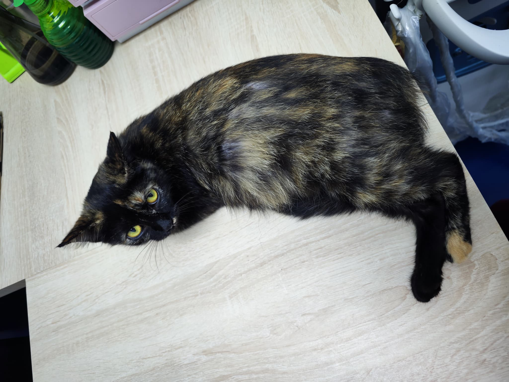
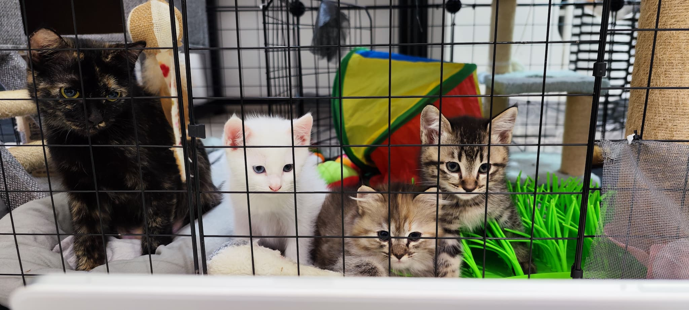
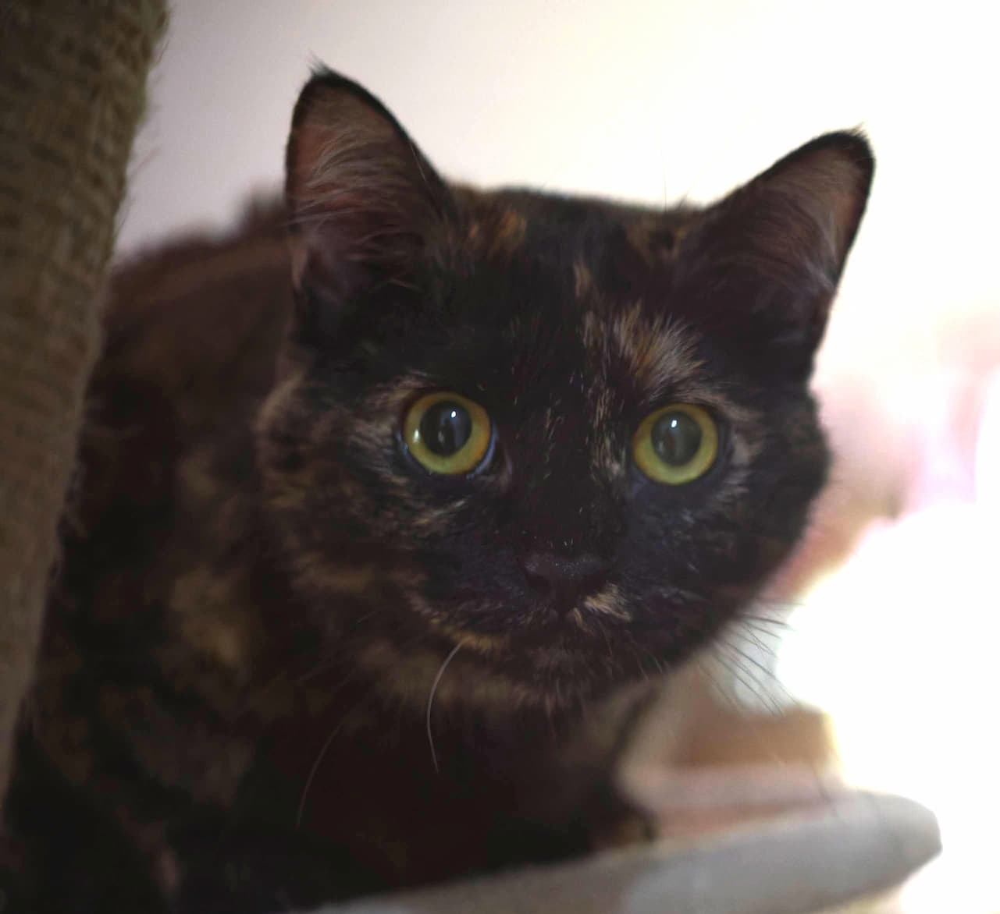

Chapter One
怀孕的流浪猫
我们开始喂街上的流浪猫群，有一天发现其中一只玳瑁猫怀孕了。
看到她挺着大肚子在街头流浪，心里不忍。就这样，把她带回了家。
她有过很多名字。先叫猫妈，因为她是妈妈。后来叫肥婆，因为她爱吃、圆滚滚。现在我们叫她茶室猫——怀疑她以前常在附近茶室流浪讨食，什么都吃，外卖一打开她第一个冲过来，闻香识食物，雷打不动。
猫妈 → 肥婆 → 茶室猫。每个名字都是她的一面，哪个都是真的她。

肥婆大肚子检查 · 流浪中的新生命
「道法自然」
— 道德经·第二十五章
Chapter Two
三只完全不同的孩子
肥婆生了三只猫。
大哥小白——雪白异瞳，和傻猪99%像，后来我们才知道，原来傻猪流浪时已经和肥婆相遇了。小白就是傻猪的儿子。
二哥虎斑仔——狸花猫，活泼不给摸，完全是另一个父亲的基因。
妹妹萌萌哒——西伯利亚森林猫样貌，蓬松长毛，是邻居散养猫的女儿。
同一个妈，三只完全不同的孩子——这就是肥婆，随心而动，不受拘束，道法自然。

肥婆和她的三只孩子 · 小白、虎斑仔、萌萌哒
✦
Chapter Three
神经质的可爱
肥婆性格神经质——喜则跳，怒则咬，完全不按常理出牌。
但这就是她的真实。她不装，不伪善，高兴了就黏着你，不高兴了就走开。没有任何理由，不需要任何解释。
庄子说，天地有大美而不言。肥婆就是这样——她的喜怒哀乐都是真的，从不掩饰，这就是她的大美。

左：肥婆和虎斑仔最亲 · 右：神经质的眼神，真实的灵魂